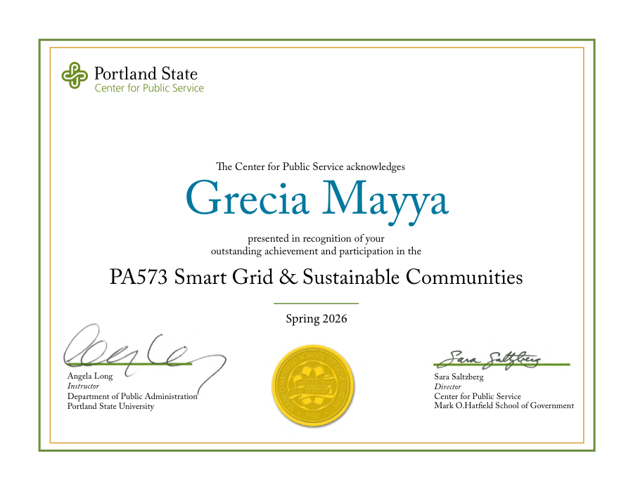
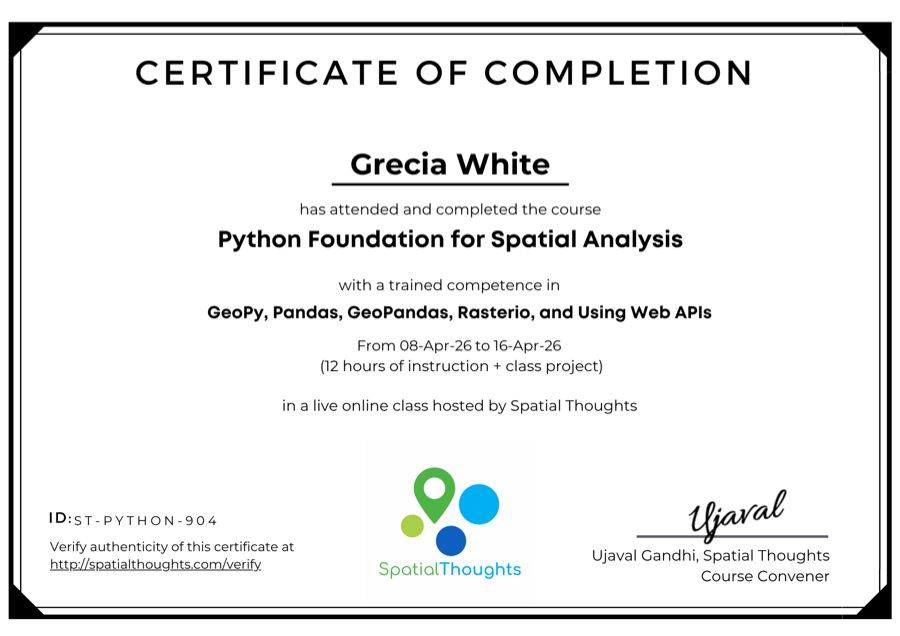
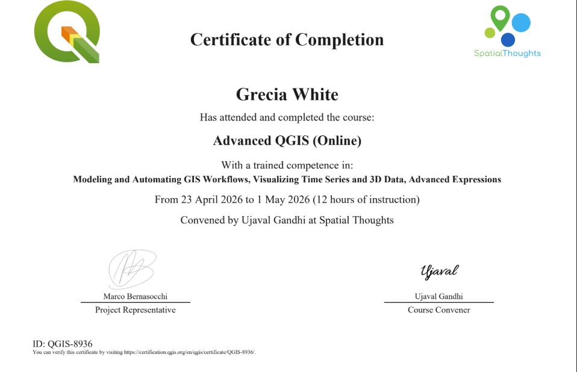
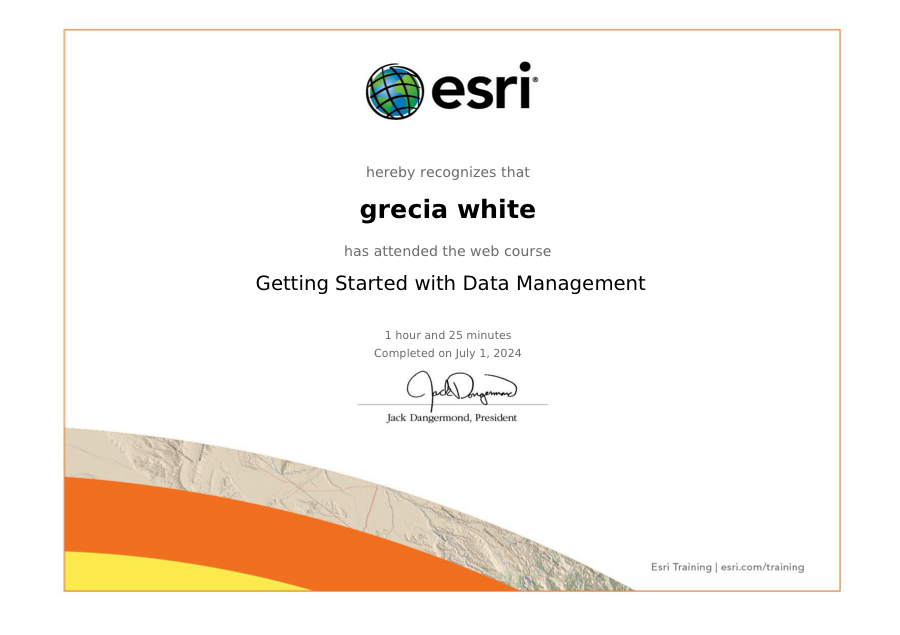
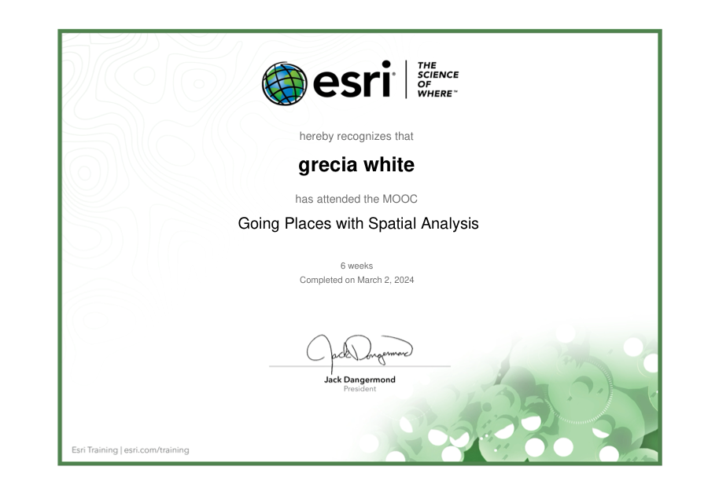
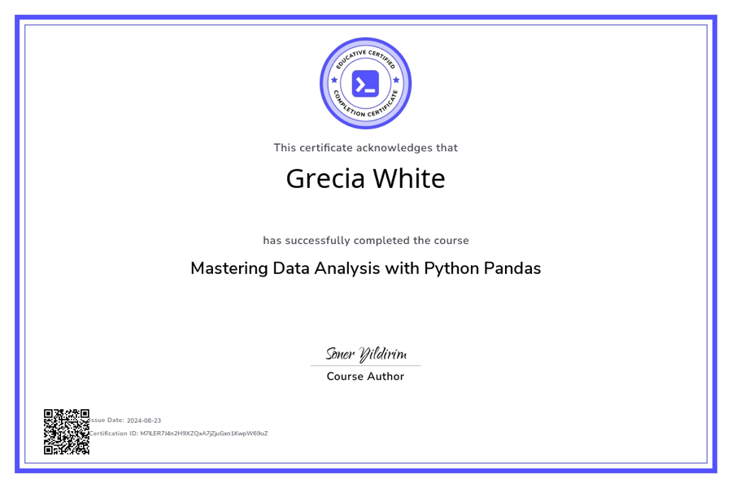
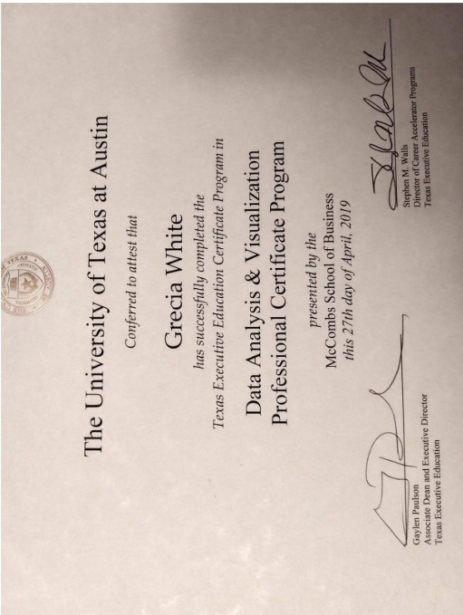

Field notes and spatial curiosities
A softer visual space for outdoor exploration, GIS projects, map-based stories, travel notes, and public-realm observations.
GIS, clean energy, transportation, and place
Grecia Mayya works at the Massachusetts Clean Energy Center, where she oversees EV programs for rideshare drivers and the deployment of EV charger installation projects across the Commonwealth.
She dedicates her mornings to working on personal GIS projects and reading about grid modernization efforts underway across the country. She is especially interested in microgrids, virtual power plants, distributed energy resources, and how these tools and technologies can help meet rising power demands.
Grecia also serves on the board of StreetsblogMass, a nonprofit news outlet focused on connecting people to information about improving walking, biking, and transit.
Her earlier work spans transportation planning for the City of Boston, reporting on mobility efforts across the state of Massachusetts, and spatial justice research.
This summer she will many other professionals within the clean energy sector as a 2026 Clean Energy Leadership Institute fellow. The CELI Fellowship is a program that prepares early-career to mid-level professionals to serve effectively as clean energy leaders in their fields. Focus areas include energy policy and market structures, and identifying barriers and approaches to clean energy deployment and innovation.
Former name: Grecia White
Featured directions
A softer visual space for outdoor exploration, GIS projects, map-based stories, travel notes, and public-realm observations.
A formal but approachable home for EV charging, distributed energy resources, microgrids, virtual power plants, and grid modernization ideas.
Topic pages include clean article slots that can later link to or embed specific Substack posts from Grecia's publication.
Visit Grecia's SubstackLearning shelf

Portland State UniversityProfessional development in smart grid concepts, clean energy systems, and sustainable communities.

Spatial ThoughtsPractical Python skills for GIS workflows, spatial data processing, and reproducible analysis.

Spatial ThoughtsOpen-source GIS mapping practice for spatial analysis, cartography, and project visualization.

Data managementFoundations for organizing, maintaining, and working responsibly with structured project data.

Spatial analysisApplied spatial analysis training for interpreting geographic patterns and relationships.

PythonData analysis practice using pandas for cleaning, transforming, and exploring datasets.

University of Texas at AustinProfessional certificate training in data analysis, visualization, and applied analytical methods.